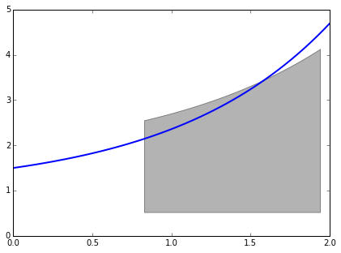
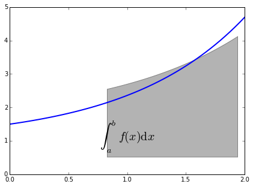
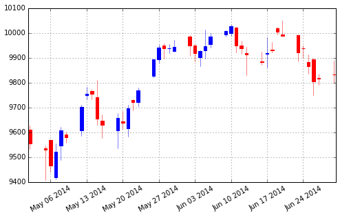
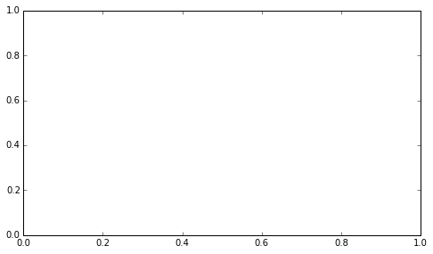
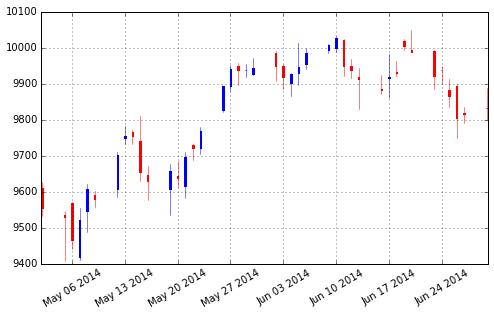
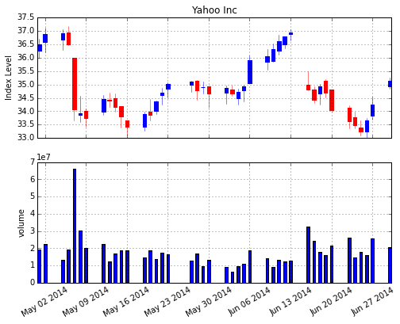
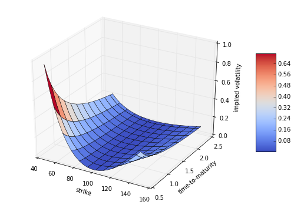
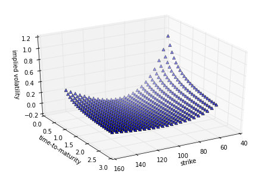

...:
Out[17]: <matplotlib.patches.Polygon at 0x153d8208>

In [18]: fig,ax=plt.subplots(figsize=(7,5))
...: plt.plot(x,y,'b',linewidth=2)
...: plt.ylim(ymin=0)
...: Ix=np.linspace(a,b)
...: Iy=func(Ix)
...: verts=[(a,0)]+list(zip(Ix,Iy))+[(b,0)]
...: ploy=Polygon(verts,facecolor='0.7',edgecolor='0.5')
...: ax.add_patch(poly)
...:
Out[18]: <matplotlib.patches.Polygon at 0x153d8208>
In [19]: fig,ax=plt.subplots(figsize=(7,5))
...: plt.plot(x,y,'b',linewidth=2)
...: plt.ylim(ymin=0)
...: Ix=np.linspace(a,b)
...: Iy=func(Ix)
...: verts=[(a,0)]+list(zip(Ix,Iy))+[(b,0)]
...: ploy=Polygon(verts,facecolor='0.7',edgecolor='0.5')
...: ax.add_patch(poly)
...: plt.text(0.5*(a+b),1,4"$\int_a^b f(x)\mathrm{d}*$",horizontalalignment='center',fontsize=20)
File "<ipython-input-19-145f40c445cd>", line 9
plt.text(0.5*(a+b),1,4"$\int_a^b f(x)\mathrm{d}*$",horizontalalignment='center',fontsize=20)
^
SyntaxError: invalid syntax
In [20]: fig,ax=plt.subplots(figsize=(7,5))
...: plt.plot(x,y,'b',linewidth=2)
...: plt.ylim(ymin=0)
...: Ix=np.linspace(a,b)
...: Iy=func(Ix)
...: verts=[(a,0)]+list(zip(Ix,Iy))+[(b,0)]
...: ploy=Polygon(verts,facecolor='0.7',edgecolor='0.5')
...: ax.add_patch(poly)
...: plt.text(0.5*(a+b),1,4"$\int_a^b f(x)\mathrm{d}x$",horizontalalignment='center',fontsize=20)
File "<ipython-input-20-c9e3ac616b77>", line 9
plt.text(0.5*(a+b),1,4"$\int_a^b f(x)\mathrm{d}x$",horizontalalignment='center',fontsize=20)
^
SyntaxError: invalid syntax
In [21]: fig,ax=plt.subplots(figsize=(7,5))
...: plt.plot(x,y,'b',linewidth=2)
...: plt.ylim(ymin=0)
...: Ix=np.linspace(a,b)
...: Iy=func(Ix)
...: verts=[(a,0)]+list(zip(Ix,Iy))+[(b,0)]
...: ploy=Polygon(verts,facecolor='0.7',edgecolor='0.5')
...: ax.add_patch(poly)
...: plt.text(0.5*(a+b),1,r"$\int_a^b f(x)\mathrm{d}x$",horizontalalignment='center',fontsize=20)
...: plt.figtext*(0.9,0.075,'$x$')
...: plt.figtext(0.075,0.9,'$f(x)$')
...: ax.set_xticks((a,b))
...: ax.set_xticklabels(('$a$','$b$'))
...: ax.set_yticks([func(a),func(b)])
...: ax.set_yticklabels(('$f(a)$','$f(b)$'))
...: plt.grid(True)
...:

Traceback (most recent call last):
File "<ipython-input-21-98dced654d64>", line 10, in <module>
plt.figtext*(0.9,0.075,'$x$')
TypeError: can't multiply sequence by non-int of type 'function'
In [22]: import matplotlib.finance as mpf
In [23]: start=(2014,5,1)
...: end=(2014,6,30)
...: quotes=mpf.quotes_historical_yahoo('^GDAXI',start,end)
...:
C:\Anaconda\lib\site-packages\matplotlib\finance.py:485: MatplotlibDeprecationWarning: This function has been deprecated in 1.4 in favor of `quotes_historical_yahoo_ochl`, which maintains the original argument order, or `quotes_historical_yahoo_ohlc`, which uses the open-high-low-close order. This function will be removed in 1.5
mplDeprecation)
In [24]: quotes
Out[24]:
[(735355.0,
9611.7900389999995,
9556.0195309999999,
9627.3798829999996,
9533.2998050000006,
88062300.0),
(735358.0,
9536.3798829999996,
9529.5,
9548.1699219999991,
9407.0898440000001,
61911600.0),
(735359.0,
9570.25,
9467.5302730000003,
9571.6298829999996,
9440.4697269999997,
82062900.0),
(735360.0,
9418.5,
9521.2998050000006,
9554.3496090000008,
9410.0800780000009,
92732600.0),
(735361.0,
9547.2695309999999,
9607.4003909999992,
9622.2998050000006,
9487.5703119999998,
102022500.0),
(735362.0,
9591.3203119999998,
9581.4501949999994,
9602.8603519999997,
9558.1103519999997,
80084100.0),
(735365.0,
9608.9296880000002,
9702.4599610000005,
9710.3398440000001,
9587.1396480000003,
87508500.0),
(735366.0,
9751.0498050000006,
9754.4296880000002,
9783.7197269999997,
9732.3398440000001,
96844100.0),
(735367.0,
9765.6201170000004,
9754.3896480000003,
9772.0898440000001,
9733.2099610000005,
76079000.0),
(735368.0,
9741.25,
9656.0498050000006,
9810.2900389999995,
9631.5703119999998,
133897400.0),
(735369.0,
9646.5595699999994,
9629.0996090000008,
9670.9003909999992,
9577.9003909999992,
113085400.0),
(735372.0,
9607.3203119999998,
9659.3896480000003,
9676.5195309999999,
9534.5595699999994,
97857300.0),
(735373.0,
9644.7998050000006,
9639.0800780000009,
9685.5595699999994,
9613.9101559999999,
67588400.0),
(735374.0,
9615.8603519999997,
9697.8701170000004,
9709.9101559999999,
9583.5595699999994,
86239200.0),
(735375.0,
9731.4501949999994,
9720.9101559999999,
9734.1396480000003,
9689.1298829999996,
63696000.0),
(735376.0,
9722.6298829999996,
9768.0097659999992,
9779.5898440000001,
9704.75,
65280800.0),
(735379.0,
9826.9101559999999,
9892.8203119999998,
9893.8095699999994,
9821.6796880000002,
53846400.0),
(735380.0,
9893.3300780000009,
9940.8203119999998,
9951.9003909999992,
9879.6396480000003,
79797700.0),
(735381.0,
9950.7402340000008,
9939.1699219999991,
9957.8701170000004,
9898.2597659999992,
72748500.0),
(735382.0,
9937.6601559999999,
9938.9003909999992,
9956.2402340000008,
9917.9697269999997,
65743400.0),
(735383.0,
9926.7304690000001,
9943.2695309999999,
9970.7695309999999,
9924.6298829999996,
103680100.0),
(735386.0,
9986.8603519999997,
9950.1201170000004,
9992.3300780000009,
9907.7695309999999,
57920300.0),
(735387.0,
9949.9599610000005,
9919.7402340000008,
9954.7802730000003,
9887.0097659999992,
71968600.0),
(735388.0,
9903.8203119999998,
9926.6699219999991,
9928.9599610000005,
9866.9697269999997,
66442200.0),
(735389.0,
9929.4101559999999,
9947.8300780000009,
10013.690430000001,
9896.0898440000001,
129942500.0),
(735390.0,
9954.0097659999992,
9987.1904300000006,
10000.919921999999,
9941.6503909999992,
92994900.0),
(735393.0,
9994.4003909999992,
10008.629883,
10009.599609000001,
9985.8701170000004,
43200400.0),
(735394.0,
9998.5097659999992,
10028.799805000001,
10033.740234000001,
9987.6904300000006,
64853100.0),
(735395.0,
10022.990234000001,
9949.8095699999994,
10024.839844,
9921.2597659999992,
96286500.0),
(735396.0,
9950.5195309999999,
9938.7001949999994,
9970.3798829999996,
9917.6103519999997,
68482900.0),
(735397.0,
9920.4902340000008,
9912.8701170000004,
9944.5703119999998,
9829.0898440000001,
79417700.0),
(735400.0,
9885.9697269999997,
9883.9804690000001,
9925.8496090000008,
9872.7695309999999,
64029200.0),
(735401.0,
9915.2001949999994,
9920.3203119999998,
9982.8896480000003,
9861.2900389999995,
72084200.0),
(735402.0,
9932.0400389999995,
9930.3300780000009,
9964.0195309999999,
9922.0703119999998,
72976800.0),
(735403.0,
10018.910156,
10004.0,
10023.549805000001,
9993.0302730000003,
86693500.0),
(735404.0,
9995.5,
9987.2402340000008,
10050.980469,
9987.2402340000008,
209559600.0),
(735407.0,
9991.4003909999992,
9920.9199219999991,
9993.0195309999999,
9885.9599610000005,
68730100.0),
(735408.0,
9938.6396480000003,
9938.0800780000009,
9948.5898440000001,
9899.4697269999997,
61266100.0),
(735409.0,
9883.7802730000003,
9867.75,
9914.1201170000004,
9836.4599610000005,
82312000.0),
(735410.0,
9894.5498050000006,
9804.9003909999992,
9898.3798829999996,
9749.75,
94925000.0),
(735411.0,
9818.4599610000005,
9815.1699219999991,
9836.6796880000002,
9791.1298829999996,
63248900.0),
(735414.0,
9833.8496090000008,
9833.0703119999998,
9889.4902340000008,
9800.0800780000009,
66649700.0)]
In [25]: quotes[:2]
Out[25]:
[(735355.0,
9611.7900389999995,
9556.0195309999999,
9627.3798829999996,
9533.2998050000006,
88062300.0),
(735358.0,
9536.3798829999996,
9529.5,
9548.1699219999991,
9407.0898440000001,
61911600.0)]
In [26]: fig,ax=plt.subplots(figsize=(8,5))
...: fig.subplots_adjust(bottom=0.2)
...: mpf.candlestick(ax,quotes,width=0.6,colorup='b',colordown='r')
...: plt.grid(True)
...: ax.xaxis_date()
...: ax.autoscale_view()
...: plt.setp(plt.gca().get_xticklabels(),rotation=30)
...:
C:\Anaconda\lib\site-packages\matplotlib\finance.py:865: MatplotlibDeprecationWarning: This function has been deprecated in 1.4 in favor of `candlestick_ochl`, which maintains the original argument order, or `candlestick_ohlc`, which uses the open-high-low-close order. This function will be removed in 1.5
mplDeprecation)
Out[26]: [None, None, None, None, None, None, None, None]

In [27]: fig,ax=plt.subplots(figsize=(8,5))
...: fig.subplots_adjust(bottom=0.2)
...: mpf.plot_day_summary(ax,quotes,width=0.6,colorup='b',colordown='r')
...: plt.grid(True)
...: ax.xaxis_date()
...: ax.autoscale_view()
...: plt.setp(plt.gca().get_xticklabels(),rotation=30)
...:

Traceback (most recent call last):
File "<ipython-input-27-970bd76bb2a4>", line 3, in <module>
mpf.plot_day_summary(ax,quotes,width=0.6,colorup='b',colordown='r')
TypeError: plot_day_summary() got an unexpected keyword argument 'width'
In [28]: fig,ax=plt.subplots(figsize=(8,5))
...: fig.subplots_adjust(bottom=0.2)
...: mpf.candlestick(ax,quotes,colorup='b',colordown='r')
...: plt.grid(True)
...: ax.xaxis_date()
...: ax.autoscale_view()
...: plt.setp(plt.gca().get_xticklabels(),rotation=30)
...:
Out[28]: [None, None, None, None, None, None, None, None]

In [29]: quotes=np.array(mpf.quotes_historical_yahoo('YHOO',start,end)
...: fig,(ax1,ax2)=plt.subplots(2,sharex=True,figsize=(8,6))
...: mpf.candlestick(ax1,quotes,width=0.6,colorup='b',colordown='r')
...: ax1.set_title('Yahoo Inc')
...: ax1.set_ylabel('Index Level‘）
File "<ipython-input-29-81262ba66f92>", line 2
fig,(ax1,ax2)=plt.subplots(2,sharex=True,figsize=(8,6))
^
SyntaxError: invalid syntax
In [30]: quotes=np.array(mpf.quotes_historical_yahoo('YHOO',start,end)
...: fig,(ax1,ax2)=plt.subplots(2,sharex=True,figsize=(8,6))
...: mpf.candlestick(ax1,quotes,width=0.6,colorup='b',colordown='r')
...: ax1.set_title('Yahoo Inc')
...: ax1.set_ylabel('Index Level‘Z)
File "<ipython-input-30-51be447c61da>", line 2
fig,(ax1,ax2)=plt.subplots(2,sharex=True,figsize=(8,6))
^
SyntaxError: invalid syntax
In [31]: quotes=np.array(mpf.quotes_historical_yahoo('YHOO',start,end)
...: fig,(ax1,ax2)=plt.subplots(2,sharex=True,figsize=(8,6))
...: mpf.candlestick(ax1,quotes,width=0.6,colorup='b',colordown='r')
...: ax1.set_title('Yahoo Inc')
...: ax1.set_ylabel('Index Level‘)
File "<ipython-input-31-740d03d45471>", line 2
fig,(ax1,ax2)=plt.subplots(2,sharex=True,figsize=(8,6))
^
SyntaxError: invalid syntax
In [32]: quotes=np.array(mpf.quotes_historical_yahoo('YHOO',start,end))
...: fig,(ax1,ax2)=plt.subplots(2,sharex=True,figsize=(8,6))
...: mpf.candlestick(ax1,quotes,width=0.6,colorup='b',colordown='r')
...: ax1.set_title('Yahoo Inc')
...: ax1.set_ylabel('Index Level')
...: ax1.grid(True)
...: ax1.xaxis_date()
...: plt.bar(quotes[:,0]-0.25,quotes[:,5],width=0.5)
...: ax2.set_ylabel('volume')
...: ax2.grid(True)
...: ax2.autoscale_view()
...: plt.setp(plt.gca().get_xticklabels(),rotation=30)
...:
Out[32]: [None, None, None, None, None, None, None, None, None]

In [33]: strike=np.linspace(50,150,24)
...: ttm=np.linspace(0.5,2.5,24)
...: strike,ttm=np.meshgrid(strike,ttm)
...:
In [34]: strike[:2]
Out[34]:
array([[ 50. , 54.34782609, 58.69565217, 63.04347826,
67.39130435, 71.73913043, 76.08695652, 80.43478261,
84.7826087 , 89.13043478, 93.47826087, 97.82608696,
102.17391304, 106.52173913, 110.86956522, 115.2173913 ,
119.56521739, 123.91304348, 128.26086957, 132.60869565,
136.95652174, 141.30434783, 145.65217391, 150. ],
[ 50. , 54.34782609, 58.69565217, 63.04347826,
67.39130435, 71.73913043, 76.08695652, 80.43478261,
84.7826087 , 89.13043478, 93.47826087, 97.82608696,
102.17391304, 106.52173913, 110.86956522, 115.2173913 ,
119.56521739, 123.91304348, 128.26086957, 132.60869565,
136.95652174, 141.30434783, 145.65217391, 150. ]])
In [35]: iv=(strike-100)**2/(100*strike)/ttm
In [36]: from mpl_toolkits.mplot3d import Axes3D
In [37]: fig=plt.figure(figsize=(9,6))
...: ax=fig.gca(projection='3d')
...: surf=ax.plot_surface(strike,ttm,iv,rstride=2,cstride=2,cmap=plt.cm.coolwarm,linewidth=0.5,antialiased=True)
...: ax.set_xlabel('strike')
...: ax.set_ylabel('time-to-maturity')
...: ax.set_zlabel('implied volatility')
...: fig.colorbar(surf,shrink=0.5,aspect=5)
...:
Out[37]: <matplotlib.colorbar.Colorbar instance at 0x0000000016E4C108>
I

n [38]: fig=plt.figure(figsize=(8,5))
...: ax=fig.add_subplot(111,projection='3d')
...: ax.view_init(30,60)
...: ax.scatter(strike,ttm,iv,zdir='z',s=25,c='b',marker='
File "<ipython-input-38-8f2e4a43f26e>", line 4
ax.scatter(strike,ttm,iv,zdir='z',s=25,c='b',marker='
^
SyntaxError: EOL while scanning string literal
In [39]: fig=plt.figure(figsize=(8,5))
...: ax=fig.add_subplot(111,projection='3d')
...: ax.view_init(30,60)
...: ax.scatter(strike,ttm,iv,zdir='z',s=25,c='b',marker='^')
...: ax.set_xlabel('strike')
...: ax.set_ylabel('time-to-maturity')
...: ax.set_zlabel('implied volatility')
...:
Out[39]: <matplotlib.text.Text at 0x16c636a0>
In [40]:
